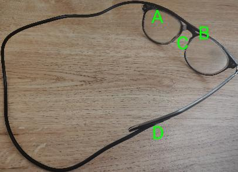
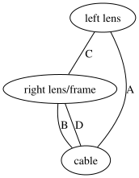
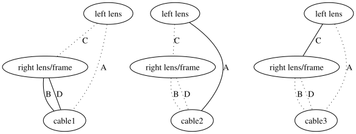
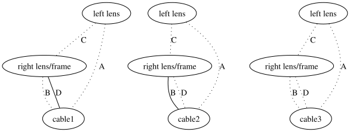

My glasses broke into three pieces, two usable. I fixed them with a cable and four glued joints. The glue is indicated with letters below.

This was an amusing feat of low-resource engineering, but the cooler part lies in its mathematical structure.
If any one joint broke, the repaired glasses would remain in one piece. If the two glue joints A and C on the left lens broke at once, the left lens would fall off. But if only the two joints A and B between cable and lenses broke, the system would remain in one (less usable) piece.
Since this system consists of three pieces (left lens, right lens/frame, cable) joined point-to-point (four gluings), we can model it as a graph with three nodes and four edges.

It starts as a connected graph. There are at least three ways to make it disconnected by removing edges. They are called cuts.

There are three more ways that are less interesting, insofar as they remove more edges than necessary. That is, those three further cuts each contain another cut as a subset.

The original three cuts that can't be reduced are called bonds (interchangeably, minimal cuts). Intuitively, the number of edges in a graph's bonds describe how robust the graph is to damage, before it becomes disconnected. The number of edges in the minimum bond makes a good measure. I was more interested in the average number of edges per bond. To find that, you have to find all bonds of a graph.
To find all bonds,
def bonds(n: int, g: list[Edge]) -< set[tuple[Edge]]:
check each set of edges for whether their removal makes the graph disconnected,
will_cut: dict[tuple[bool], bool] = {}
for r in itertools.product(*((False, True) for i in range(len(g)))):
will_cut[tuple(not x for x in r)] = not is_connected(n, g, r)
and look among the cuts
cuts: set[tuple[Edge]] = set()
for k in will_cut:
if will_cut[k]:
for those which have no cuts as subsets.
for i, t in enumerate(k):
if t and will_cut[replace(k, i, False)]:
break
else:
cuts.add(tuple(e for j, e in enumerate(g) if k[j]))
return cuts
This method gives the right answers, but in time exponential in the number of edges. It is impractical for nontrivial graphs. I asked ChatGPT for a better method. It gave an impressively more efficient implementation, which I do not claim to grasp, but which I can confirm is correct as far as I could test it.
The average number of edges per bond is the total edges across all bonds divided by the number of bonds. If I consider not the average but its numerator and denominator, I can turn the problem into Integer Sequences, for which the Online Encyclopedia is of much use.
I ran code to get those two numbers for several families of graphs.
| n | 1 | 2 | 3 | 4 | 5 | 6 | 7 | 8 | 9 |
|---|---|---|---|---|---|---|---|---|---|
| complete graphs | * | 1 | 6 | 24 | 80 | 240 | 672 | 1792 | 4608 |
| * | 1 | 3 | 7 | 15 | 31 | 63 | 127 | 255 | |
| ladder graphs | 1 | 12 | 39 | 86 | 157 | 256 | 387 | 554 | 761 |
| 1 | 6 | 15 | 28 | 45 | 66 | 91 | 120 | 153 | |
| 3-by-n square grids | 2 | 39 | 204 | 739 | 2246 | 6151 | † | † | † |
| 2 | 15 | 53 | 146 | 356 | 809 | † | † | † | |
| n against n+1 trapezoid truss | 6 | 32 | 86 | 176 | 310 | 496 | 742 | 1056 | 1446 |
| 3 | 10 | 21 | 36 | 55 | 78 | 105 | 136 | 171 | |
| triangular grid, n nodes per edge | 6 | 54 | 426 | 4200 | † | † | † | † | † |
| 3 | 15 | 70 | 421 | † | † | † | † | † | |
| prism graph | 1* | 18* | 87 | 300 | 825 | 1926 | 3983 | 7512 | 13185 |
| 1* | 6* | 22 | 63 | 151 | 316 | 596 | 1037 | 1693 | |
| Petersen (n, 2) | 1* | 4* | 87 | 144* | 1110 | 1854* | 9471 | 17000* | 66006 |
| 1* | 3* | 22 | 37* | 191 | 306* | 1261 | 2139* | 7237 |
The first row for each family holds total edges across bonds. The second row holds the number of bonds. A "*" means the value at the spot would be ill-defined. A "†" means the value couldn't be calculated in a reasonable time.
I looked up each sequence on the OEIS. Many had no matches.
Those last results, giving exact counts for complete graphs, are now well-understood but deserve to be discussed.
Removing the edges in a cut turn a connected graph into one with at least two connected components. A minimal cut yields exactly two connected components. For suppose it did not, and yielded three or more: the edges between any two components could be restored, and the graph would still be disconnected, showing that a subset of the cut also suffices as a cut.
Complete graphs are symmetric enough that choosing two connected components means independently assigning each node to one of two subsets. But, since the components are unordered, this double-counts. And, since assigning all nodes to one component wouldn't truly cut the graph, that one case must be excluded. Thus n nodes can be cut into two connected components in 2n - 1 - 1 ways.
The two components left after each minimal cut must be complete graphs. For suppose they were not: the edges "missing" from them, that make them complete, could be restored, and the graph would still be disconnected, showing that a subset of the cut also suffices as a cut.
A complete graph on n nodes has n (n - 1) / 2 edges. A minimal cut preserves a subgraph with k nodes and another with n - k nodes. Respectively, those subgraphs have k (k - 1) / 2 and (n - k) (n - k - 1) / 2 edges. The difference lies in the edges removed by the cut, which thus number k (n - k).
There are k (n - k) edges in each of the C(n, k) / 2 minimal cuts that separate a subgraph of k nodes from a subgraph of n - k. This k can vary from 1 to n - 1, inclusive. So the total number of edges in bonds is the sum from k = 1 to n - 1 of k (n - k) C(n, k) / 2.
Empirically, that sum simplifies to n (n - 1) 2n - 3. Outside this graph problem, both expressions count ways to pick out two Excluded Items from n, then assign either Red or Green to each remaining item.
Consider how many of n items are Excluded Item A or Red; call that k. It must vary from 1 (EIA is guaranteed) to n - 1 (EIB is guaranteed). Given one value of k, there are k choices for EIA among this subset, and independently n - k choices for EIB among the remainder. There are C(n, k) choices for how to mix this first subset into the original set. Since EIA and EIB aren't distinguished at the end, we double-counted and divide by 2. Hence the above sum.
Picking out two items happens in C(n, 2) = n (n - 1) / 2 ways, and assigning Red or Green to the remainder is n - 2 independent choices, i.e. 2n - 2 options. Hence the above product.